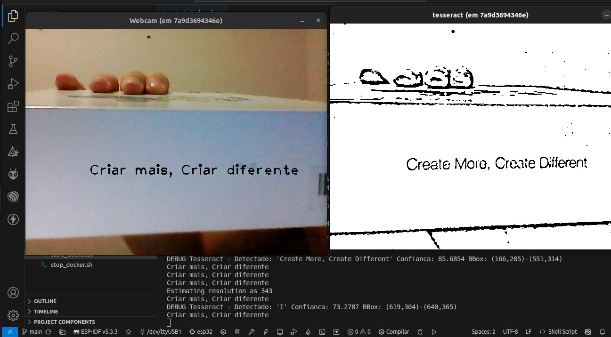

Projeto de Estruturas de Dados Orientadas a Objetos (2025)
O HQ-TranslatorTrata-se de uma aplicação de tradução de texto em tempo real desenvolvida em C++ com arquitetura orientada a objetos. O sistema é estruturado em classes especializadas que encapsulam as funcionalidades principais: captura de vídeo, detecção de texto, tradução e renderização. A classe responsável pela captura utiliza a webcam para adquirir os frames. Outra classe, baseada no Tesseract OCR, realiza a extração dos textos presentes nas imagens. A tradução é gerenciada por uma classe dedicada, que se comunica com a API LibreTranslate para converter o conteúdo detectado para o idioma desejado. Por fim, uma classe de renderização exibe o resultado traduzido sobre o vídeo original.
Execução do HQ-Translator: detecção OCR e tradução em tempo real.
Para garantir fluidez e desempenho, o sistema aplica o conceito de concorrência orientada a objetos, utilizando uma arquitetura multi-threaded em pipeline: cada etapa do processo (captura, OCR, tradução e exibição) é tratada por um objeto em sua própria thread, permitindo que as tarefas ocorram em paralelo de forma sincronizada. Essa organização modular melhora a manutenibilidade e escalabilidade da aplicação.
Para rodar o projeto, você vai precisar de uma webcam e do Docker instalado. Com tudo pronto, siga os passos:
1. Clone o projeto e entre no diretório:
git clone https://github.com/marcelohenrique15/hq-translator.git
cd hq-translator2. Dê permissão de execução aos scripts:
chmod +x *.sh3. Inicie o container Docker:
(Isso pode levar alguns minutos na primeira vez)
./start_docker.sh4. Execute o programa:
(Após o passo anterior, você estará no terminal do container. Rode o comando abaixo para compilar e iniciar a aplicação)
./run.shMarcelo Henrique: Idealizador do projeto, focou no backend, arquitetura do pipeline de dados e integração das funcionalidades de detecção e tradução.
Gabriel Nascimento: Atuou no frontend e colaborou em diversas áreas do projeto.
Gustavo Ferreira: Trabalhou no algoritmo de detecção de texto e na funcionalidade de sobreposição da tradução no vídeo (realidade aumentada).
Elinaldo Emanoel: Colaborou com o frontend, documentação e testes em várias etapas do projeto.
Matheus Stepple: Contribuiu no pré-processamento de imagens para melhorar a precisão da detecção de texto e na modularização do código.